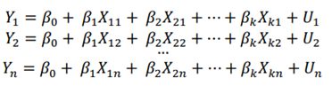
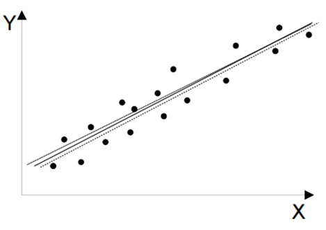
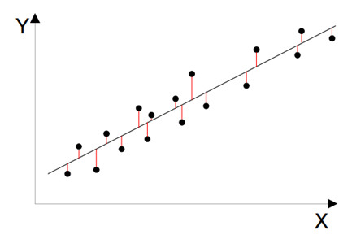

Variables regionalizadas
Existen diversos métodos geoestadísticos que dan respuesta a las preguntas planteadas anteriormente:
Mínimos cuadrados ordinarios (OLS)
La expresión general de un modelo de regresión, para un total de k variables explicativas es:
El error del modelo de regresión será la diferencia entre el valor real de la variable y el valor propuesto para la misma en el modelo. A la hora de generar el modelo, lo deseable es que el error fuera lo más pequeño posible.
En cada punto de estudio conocemos el valor de todas las variables, luego tendremos tantas ecuaciones como puntos disponibles:

Por tanto, tendremos múltiples rectas o hiperplanos (según el número de variables explicativas) posibles para explicar la relación entre las variables:

Fuente: Chirivella González, V. (2015)
El método de los mínimos cuadrados ordinarios consiste en la obtención de un hiperplano de forma que se minimice la suma de los cuadrados de las distancias entre cada una de las observaciones de la variable y dicho hiperplano (residuos).

Fuente: Chirivella González, V. (2015)
Se estima el mínimo error sumando al cuadrado todas las distancias, para que las negativas no anulen a las positivas y al elevarlo al cuadrado, penalizamos mucho más los puntos que están más alejados, y que tienen más error.
Regresión exploratoria
Encontrar un modelo OLS correcto puede ser difícil, especialmente cuando hay muchas posibles variables explicativas que podrían ser importantes para modelar la variable dependiente.
La Regresión exploratoria es una herramienta de extracción de datos que realiza todas las combinaciones posibles de variables explicativas para ver qué modelos superan todos los estadísticos de OLS.
Aunque la Regresión exploratoria es similar a la Regresión por pasos, en lugar de solo buscar modelos con valores altos de R2 ajustada, la Regresión exploratoria busca modelos que cumplan con todos los requisitos y suposiciones del método de OLS.
Regresión ponderada geográficamente (GWR)
La regresión ponderada geográficamente es una forma local de regresión lineal que se utiliza para modelar las relaciones entre la variable dependiente y explicativas que varían espacialmente.
En el caso de los datos geográficamente dispersos con variabilidad espacial inherente, la estimación de los coeficientes de un modelo de regresión para una ubicación concreta basada únicamente en las observaciones de dicha ubicación no es factible debido al reducido número de observaciones.
La regresión ponderada geográficamente es una herramienta importante para explorar la no estacionariedad espacial.
Mediante el uso de GWR, se construye una ecuación de regresión distinta para cada observación del conjunto de datos al incorporar las variables dependiente y explicativas de las entidades vecinas que caen dentro de un ancho de banda.
Al estimar el parámetro para una localización especifica, los elementos en los datos se ponderan según su distancia a esta localización, con mayor peso para los elementos más cercanos.
El modelo GWR puede ser descrito de la siguiente forma:
El tipo de modelo puede ser: Gaussiano, Logístico o Poisson, a diferencia del OLS, que siempre es lineal.
Las relaciones de vecindad, como en otros estadísticos, pueden darse o bien por distancia o valor máximo de vecinos.
El peso de los elementos más cercanos se puede usar un esquema de ponderación Gaussiano o Bicuadrado
Y es la variable explicada.
Xj son las variables explicativas.
βj son unos parámetros que cuantifican la relación existente entre la variable explicada y cada variable explicativa.
U es la variable aleatoria que recoge la influencia sobre la variable explicada de otras variables explicativas que no hemos tenido en cuenta en el modelo.
La mejor forma de actuar es seleccionar previamente variables de regresión explicativa compatibles con el sentido común. Después, construir los modelos de regresión con una parte de sus datos, por ejemplo, el 70% de los datos y validarlos con el resto (30%).
y(s) es la variable de respuesta en el lugar s.
βi(s), i = 1, 2, ..., p son los coeficientes de las variables independientes en el lugar s.
Є(s) es el efecto aleatorio en el lugar s también llamado “intercepción”.
Para variables continuas (por ejemplo, valores de temperatura).
Para variables binarias (por ejemplo, presencia o ausencia).
Para variables de recuento (por ejemplo, número de ocurrencias de un suceso).
Disminuye gradualmente a medida que aumenta la distancia de la entidad de regresión.
Como el gaussiano, pero todas las entidades que quedan fuera de la vecindad especificada se les asigna cero y no afectan a la regresión local.